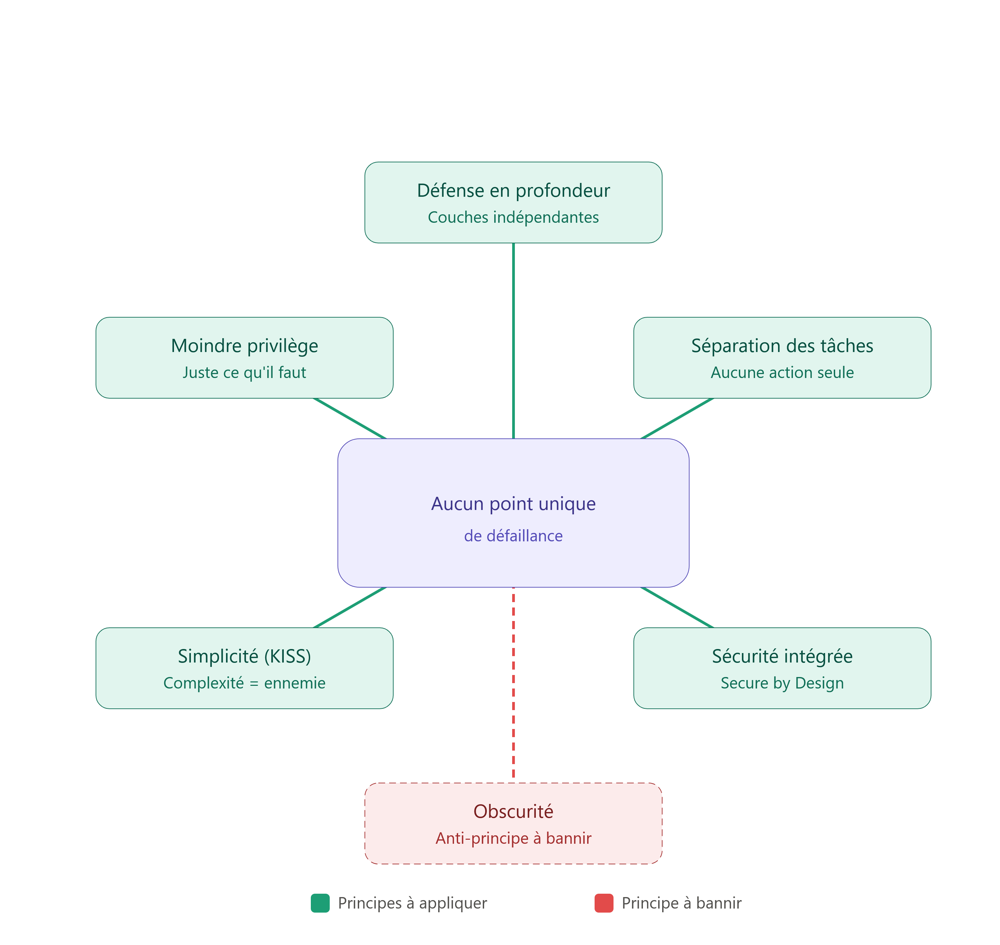

La plupart des articles techniques — les miens y compris — commencent par une architecture : un schéma réseau, un protocole, une configuration. Celui-ci fait l'inverse. Il traite de ce qui vient avant l'architecture : les principes qui, en silence, ont dicté chaque choix fait dans les projets précédents de ce portfolio — pourquoi un reverse proxy se place devant une API plutôt qu'à côté, pourquoi AGDLP sépare identité et permission, pourquoi les groupes Tier 0 d'Active Directory doivent rester vides.
Ces principes ne sont pas des techniques. Ce sont des habitudes de pensée. Un ingénieur qui les a intériorisées ne se pose plus la question « est-ce sécurisé ? » après coup — il ne peut tout simplement pas concevoir un système sans qu'elles s'imposent d'elles-mêmes. C'est cette bascule, du réflexe correctif au réflexe structurel, que cet article cherche à documenter.
Il y a cinq principes qu'il faut systématiquement appliquer, et un qu'il faut systématiquement bannir. Ce dernier mérite d'être traité en premier, tant il permet de comprendre les cinq autres en creux.

Ce qu'il ne faut jamais faire : la sécurité par l'obscurité
Commencer par l'anti-principe peut sembler contre-intuitif, mais c'est la meilleure porte d'entrée : comprendre pourquoi la sécurité par l'obscurité échoue, c'est comprendre en négatif ce que tous les autres principes recherchent positivement.
La sécurité par l'obscurité consiste à faire reposer la protection d'un système sur le secret de son fonctionnement plutôt que sur sa robustesse intrinsèque. L'idée séduit instinctivement : si personne ne sait comment marche mon système, personne ne peut l'attaquer. Le problème, c'est que secret et sécurité ne sont pas synonymes — et l'histoire de la cryptographie l'a démontré de façon quasi systématique.
Au XIXe siècle, le cryptographe Auguste Kerckhoffs a formulé un principe qui porte aujourd'hui son nom et qui reste la pierre angulaire de toute conception cryptographique moderne : un système de chiffrement doit rester sûr même si tout son fonctionnement est connu de l'adversaire, à l'exception d'un seul élément — la clé. Autrement dit, le secret ne doit résider que dans une donnée unique, isolée, révocable et renouvelable, jamais dans la conception elle-même.
Ce principe explique pourquoi les algorithmes sur lesquels repose la quasi-totalité de la sécurité numérique actuelle — AES pour le chiffrement symétrique, RSA pour l'asymétrique — sont entièrement publics. N'importe qui peut lire leurs spécifications, les implémenter, les auditer, chercher une faille. Ce n'est pas une faiblesse : c'est précisément ce qui les rend fiables. Un algorithme que des milliers de chercheurs indépendants ont tenté de casser pendant des décennies, sans succès, offre une garantie qu'aucun algorithme "propriétaire et secret" ne pourra jamais offrir — parce que l'absence de faille découverte par son seul concepteur ne prouve rien sur sa résistance face au reste du monde.
C'est exactement le mécanisme qu'on retrouve dans le lab LAB-ZT-IAM-01 de ce portfolio : la validation des tokens JWT repose sur RS256, un algorithme de signature asymétrique entièrement documenté. Keycloak ne protège rien en cachant comment il signe les tokens — il protège en gardant secrète une seule chose, la clé privée, tout en exposant publiquement la clé publique et l'algorithme via l'endpoint JWKS. N'importe quel attaquant peut lire le code de PyJWT, comprendre exactement comment la vérification RS256 fonctionne, et cela ne lui donne strictly aucun avantage : sans la clé privée, il ne peut pas forger de signature valide. C'est la sécurité "boîte de verre" plutôt que "boîte noire" — on voit tout le mécanisme, et il tient quand même.
La sécurité par l'obscurité échoue pour une raison structurelle simple : elle a une date de péremption. Un secret de conception finit toujours par fuiter — par rétro-ingénierie, par un employé qui change d'entreprise, par une fuite de documentation, par un simple accident. Et le jour où il fuite, tout le système s'effondre d'un coup, puisque sa sécurité ne reposait que sur cette unique variable. Un système conçu selon Kerckhoffs, à l'inverse, ne perd rien si sa conception est connue — parce qu'elle était censée l'être depuis le début.
C'est ce contre-exemple qui donne sa cohérence à tout le reste de cet article. Les cinq principes qui suivent partagent tous une même intuition : la sécurité doit venir de la structure du système, jamais de ce que l'attaquant ignore.
1. La défense en profondeur (Defense in Depth)
Le principe
La défense en profondeur consiste à ne jamais faire reposer la sécurité d'un système sur un seul mécanisme. Elle organise plutôt plusieurs couches de protection indépendantes, de sorte que la défaillance d'une seule d'entre elles ne compromette pas l'ensemble.
L'analogie du château fort médiéval, bien que devenue un cliché du milieu, reste pédagogiquement juste — à condition d'en tirer la bonne leçon. Un château fort n'est pas protégé par un seul mur épais : il combine des douves, un pont-levis, des remparts, des herses, des tours de guet. Chaque élément peut céder isolément sans que la forteresse tombe. Le vrai enseignement n'est pas dans l'accumulation d'obstacles, mais dans leur indépendance : un pont-levis compromis ne rend pas les douves inutiles, et des douves franchies ne rendent pas les remparts inutiles.
Application concrète
Reprenons une architecture applicative classique : un utilisateur, via son poste de travail, accède à travers un réseau à un serveur web, qui interroge un serveur applicatif, qui lit une base de données. Une approche en défense en profondeur superpose des mécanismes hétérogènes à chaque étage plutôt que de renforcer un seul point :
- Au niveau de l'identité : une authentification multifacteur (MFA), combinant un facteur de connaissance (mot de passe), un facteur de possession (téléphone, clé physique) et parfois un facteur biométrique.
- Au niveau du poste client : une solution de gestion des terminaux (MDM/EDR) qui garantit que les correctifs de sécurité sont appliqués, que les mots de passe respectent une politique minimale, et qui détecte les comportements anormaux en temps réel.
- Au niveau réseau : des pare-feux qui limitent strictement les flux autorisés entre zones, empêchant un serveur web exposé publiquement de dialoguer librement avec la base de données.
- Au niveau applicatif : des tests de vulnérabilité réguliers sur le code du serveur web et du serveur applicatif.
- Au niveau des données : le chiffrement au repos et des contrôles d'accès qui restent actifs même si un attaquant parvient à exfiltrer physiquement le support de stockage.
C'est très exactement la logique derrière le LAB-ZT-IAM-01 documenté dans ce portfolio. Le reverse proxy Nginx masque et filtre — première couche. Keycloak centralise l'authentification et signe des jetons vérifiables — deuxième couche. L'API Flask ne fait confiance ni au réseau ni au proxy et revalide elle-même chaque signature JWT — troisième couche. Le test réalisé dans ce lab, consistant à contourner délibérément le reverse proxy pour attaquer directement l'API, n'était rien d'autre qu'une vérification empirique de ce principe : si une seule couche cède, les suivantes doivent continuer à tenir seules.
L'objectif final tient en une phrase :
Ne jamais avoir de point unique de défaillance (single point of failure), et concevoir le système pour qu'il échoue de façon sûre (fail safe) — c'est-à-dire que lorsqu'un mécanisme cède, le système par défaut refuse l'accès plutôt que de l'accorder.
2. Le principe du moindre privilège (Least Privilege)
Le principe
Le principe du moindre privilège énonce qu'un utilisateur, un processus ou un système ne doit disposer que des droits strictly nécessaires à l'accomplissement de sa mission — ni plus, ni de façon permanente si le besoin est temporaire.
Ce principe se décline en réalité sur trois plans distincts, souvent confondus alors qu'ils appellent des réponses différentes.
a) L'attribution initiale des droits
Le premier plan est le plus évident : ne donner un accès qu'à celui qui peut justifier d'un besoin métier réel pour l'obtenir. Ce n'est pas une question de confiance envers la personne — c'est une réduction mathématique de la surface d'attaque. Chaque droit accordé est un chemin de compromission potentiel supplémentaire ; un droit jamais accordé est un chemin qui n'existe tout simplement pas.
b) Le durcissement des systèmes (hardening)
Le deuxième plan concerne les systèmes eux-mêmes, pas seulement les utilisateurs. Une installation par défaut d'un serveur active souvent des services que l'usage réel ne requiert jamais — un serveur web fraîchement installé qui expose, en plus du protocole HTTP nécessaire, un service FTP ou SSH resté activé "au cas où". Chacun de ces services ouverts est une surface d'attaque supplémentaire sans bénéfice fonctionnel réel s'il n'est jamais utilisé. Le durcissement consiste précisément à désactiver tout ce qui n'est pas strictement requis, renommer les identifiants par défaut prévisibles (un compte admin générique est le premier nom que tout outil d'attaque automatisé va tester), et changer systématiquement tout mot de passe fourni en sortie d'usine.
C'est cette logique de durcissement qu'on retrouve directement dans les groupes Tier 0 d'Active Directory documentés dans un précédent article de ce portfolio : Enterprise Admins, Schema Admins, et dans une moindre mesure Domain Admins, doivent rester vides en permanence. Ce n'est pas une négligence si l'on n'y place personne — c'est l'application littérale du moindre privilège au niveau du groupe lui-même : un groupe vide n'est pas un chemin d'attaque exploitable, même s'il existe.
c) La dérive de privilèges (privilege creep) et la recertification
Le troisième plan est le plus insidieux, car il n'apparaît jamais lors d'un audit ponctuel : c'est l'accumulation progressive de droits au fil du temps, connue sous le nom de privilege creep.
Le scénario est presque toujours le même. Une personne change de poste au sein de l'organisation. Elle sollicite les droits nécessaires à sa nouvelle fonction — légitime. Mais dans le même mouvement, on lui accorde souvent des droits supplémentaires "au cas où elle en aurait besoin plus tard", pour éviter d'avoir à revenir formuler une nouvelle demande. Le problème est que cette logique du "juste au cas où" est l'exact opposé du moindre privilège, qui exige au contraire "juste ce qu'il faut, pour la durée où c'est nécessaire". Répétée sur des années et sur des centaines de collaborateurs, cette dérive transforme progressivement un système de droits cohérent en un fouillis où plus personne ne sait précisément qui a accès à quoi, ni pourquoi.
La seule parade structurelle est la recertification périodique des accès : une revue régulière — au minimum annuelle, parfois trimestrielle selon la sensibilité des systèmes — où chaque droit accordé doit être réexaminé et rejustifié. Ce qui n'est plus justifié est retiré, sans exception, y compris pour les droits accordés "au cas où" qui n'ont jamais servi.
3. La séparation des tâches (Separation of Duties)
Le principe
La séparation des tâches interdit qu'une action sensible unique puisse être entièrement réalisée, de bout en bout, par une seule personne. L'objectif n'est pas de ralentir les processus par bureaucratie — c'est de rendre nécessaire une collusion entre au moins deux acteurs pour qu'une compromission ait lieu, ce qui est structurellement beaucoup plus difficile à organiser et à dissimuler qu'un acte isolé.
L'image la plus parlante est celle d'une porte à deux serrures distinctes, chacune confiée à une personne différente : ni l'une ni l'autre, seule, ne peut ouvrir la porte. Seule une action conjointe le permet. Il n'existe alors aucun point de contrôle unique dont la compromission suffirait à tout faire basculer.
Application concrète
En environnement informatique, ce principe structure typiquement les workflows d'approbation : un collaborateur qui demande un accès à une ressource sensible ne peut pas être la même personne que celle qui approuve cette demande. Si une seule et même personne pouvait à la fois demander et valider ses propres accès, la séparation des tâches n'existerait tout simplement plus — le contrôle serait purement cosmétique.
Ce principe rejoint directement AGDLP et la logique de délégation granulaire évoquée dans les articles précédents de ce portfolio : c'est précisément parce que la création de comptes, l'attribution de groupes et l'octroi effectif de permissions passent par des acteurs et des mécanismes distincts qu'aucun administrateur isolé ne peut, seul, s'octroyer un accès qu'il n'était pas censé obtenir. C'est aussi la raison structurelle pour laquelle des groupes comme Account Operators sont si dangereux : ils permettent, à eux seuls, de contourner cette séparation en donnant à une identité unique un pouvoir de bout en bout sur la gestion des comptes.
4. La sécurité dès la conception (Secure by Design)
Le principe
La sécurité dès la conception affirme que la sécurité ne doit jamais être un ajout tardif, plaqué après coup sur un système déjà construit — elle doit être pensée dès la phase de conception, et rester présente à chaque étape ultérieure.
Une comparaison éclaire immédiatement l'enjeu : personne ne construirait un bâtiment dans une zone sismique en pensant d'abord à son esthétique, pour ensuite tenter de le rendre parasismique une fois la construction achevée. La résistance aux séismes se décide dans les plans, avant la première fondation coulée — pas en rustines après coup.
Application concrète
Transposé à un cycle de développement logiciel classique — expression du besoin, conception, développement, déploiement, test, mise en production — l'erreur la plus répandue consiste à ne s'intéresser sérieusement à la sécurité qu'au moment des tests, voire seulement après la mise en production, une fois qu'un premier incident a eu lieu. La sécurité devient alors un correctif d'urgence plutôt qu'une propriété du système.
L'approche "secure by design" infuse au contraire chaque étape : les exigences de sécurité sont formulées en même temps que les exigences fonctionnelles ; l'architecture intègre les contrôles d'accès et les flux de données sécurisés dès sa conception ; le code est écrit selon des pratiques de codage sécurisé, pas relu a posteriori en espérant y détecter des failles ; le déploiement se fait sur une infrastructure elle-même durcie ; et les tests incluent systématiquement une composante sécurité, pas uniquement fonctionnelle.
C'est très exactement la démarche suivie dans le lab Zero Trust de ce portfolio : l'API Flask n'a pas été développée d'abord sans contrôle d'accès, puis "sécurisée" a posteriori en ajoutant un filtre — la vérification JWT fait partie de sa conception depuis la première ligne de code, au même titre que sa logique métier. C'est aussi ce qui distingue fondamentalement un modèle Zero Trust d'un modèle périmétrique classique : le périmétrique ajoute de la sécurité autour d'un système jugé digne de confiance par défaut ; le Zero Trust intègre la vérification à l'intérieur de chaque composant, dès sa conception.
Il faut noter une nuance importante : "secure by design" ne signifie pas qu'aucune configuration n'est jamais nécessaire après coup. Cela signifie que le système est pensé, dès l'origine, pour être sécurisable simplement — et non pour nécessiter une refonte complète le jour où l'on souhaite enfin s'occuper de sa sécurité.
5. La simplicité (KISS — Keep It Simple, Stupid)
Le principe
Le principe KISS part d'un constat presque paradoxal : la complexité est l'ennemie de la sécurité, pas son alliée. Un système inutilement complexe ne devient pas plus difficile à attaquer — il devient seulement plus difficile à utiliser correctement pour les utilisateurs légitimes, qui finissent par contourner les mesures de sécurité justement parce qu'elles sont trop contraignantes.
La logique est simple à énoncer : si respecter une règle de sécurité est plus pénible que de la contourner, une partie significative des utilisateurs finira, tôt ou tard, par la contourner. Et un contrôle de sécurité massivement contourné dans la pratique n'apporte, au bout du compte, aucune protection réelle — pire, il donne une illusion de sécurité sur le papier qui masque l'absence de protection effective.
Application concrète
L'exemple le plus universellement reconnaissable est celui des politiques de mots de passe excessivement complexes : exiger simultanément une majuscule, une minuscule, un chiffre, un caractère spécial, une longueur minimale importante, un renouvellement fréquent, et l'interdiction de réutiliser un mot de passe déjà utilisé — le tout décliné différemment sur des dizaines de systèmes distincts au sein d'une même organisation. Le résultat concret n'est pas une population d'utilisateurs disciplinés générant des mots de passe robustes et variés. C'est, dans l'immense majorité des cas observés en entreprise, un post-it collé sous le clavier, ou un mot de passe unique légèrement varié et réutilisé partout — exactement l'inverse de l'objectif visé.
Il est important de noter que KISS n'entre pas en contradiction avec la défense en profondeur, malgré une apparente tension. La défense en profondeur vise à complexifier le parcours de l'attaquant, pas celui de l'utilisateur légitime. Un bon système en couches multiples reste, du point de vue de l'utilisateur autorisé, aussi simple à traverser qu'un système à une seule couche — la complexité est absorbée par l'architecture, jamais reportée sur l'expérience utilisateur. C'est quand cette distinction se brouille, quand la complexité défensive commence à peser sur l'usage légitime plutôt que sur l'attaque, que KISS doit primer et simplifier.
Ce que ces principes disent, une fois mis bout à bout
Pris isolément, ces six notions — dont une à bannir — peuvent sembler être une simple liste de bonnes pratiques disparates. Mises en regard, elles racontent en réalité une seule et même histoire, déclinée sous six angles différents : la sécurité ne doit jamais dépendre d'un point unique — ni d'une seule couche de protection (défense en profondeur), ni d'un seul droit qu'on aurait accordé un peu trop largement (moindre privilège), ni d'une seule personne habilitée à agir seule (séparation des tâches), ni d'un correctif ajouté après coup (secure by design), ni d'une complexité qui finit par se retourner contre ceux qu'elle devait protéger (KISS), ni — surtout — d'un secret de conception qui, une fois éventé, ferait tout s'effondrer d'un coup (contre la sécurité par l'obscurité).
C'est cette grille de lecture qui, en réalité, précédait chacun des projets techniques déjà documentés dans ce portfolio. Un schéma réseau, une configuration Nginx ou une architecture AGDLP ne sont jamais que des réponses concrètes à une question posée bien plus en amont :
« Où, dans ce système, ai-je laissé un point de défaillance unique — et lequel de ces six principes dois-je appliquer pour le supprimer ? »